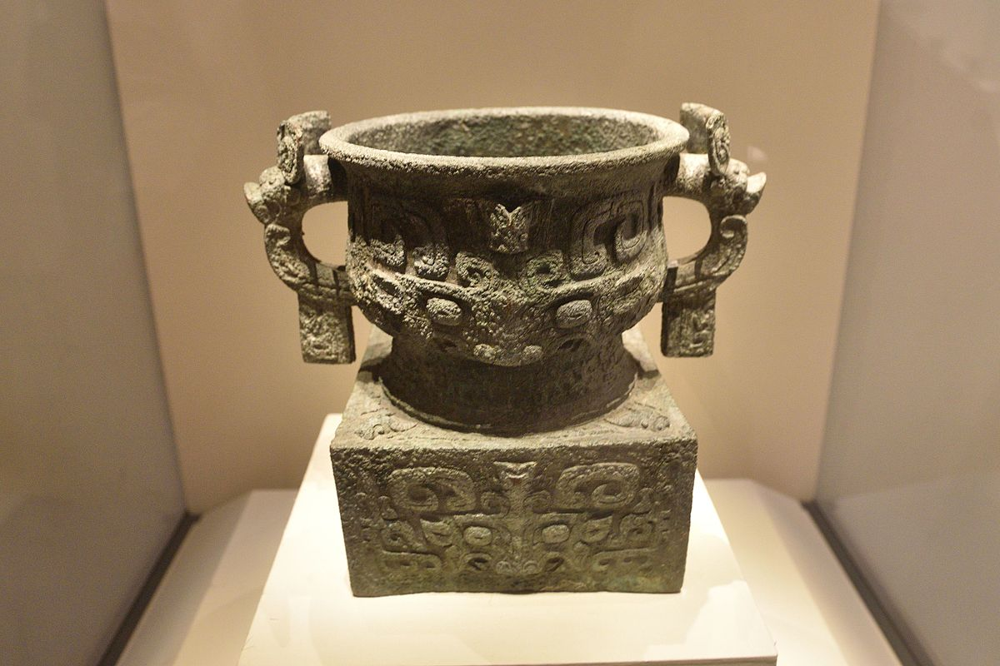

汉末建安十三年
一封逼降信
中国历史学习馆
沿着人物、器物、道路与转折时刻，回到三皇五帝至清朝的历史现场。每一段叙事都标明：它是史实、传说，还是后世的文学想象。
以器物为证
利簋约前 1046 年
你上次停在
历史的入口
01 — 选择一种抵达方式不必从头背起。一次宴席、一场雨、一封密信，都是理解大历史的入口。
一封逼降信
一场未能如期抵达的雨
帝国最严密的齿轮，是如何从一场雨里松动的？
一件留下铭文的器物
传说中的战争，在青铜器腹底留下了可被复读的时间。
把朝代放回同一条河
点击任一时代，查看它的起点、转折与留下来的问题。
帝国崩解后，人群、信仰和权力重新流动。那些被称为乱世的年份，也孕育了新的中国。
不止于王朝
赤壁之前
建安十三年，曹操占领荆州后写信给孙权。信中自称“治水军八十万众”，希望与孙权“会猎于吴”。它看似是一次邀约，实则是一张要求江东交出命运的通知书。
这封信抵达时，孙权只有二十六岁。
他继承的并不是一张稳固的王座，而是父兄多年经营的江东。北方的曹操刚刚挟天子、定河北，又收下荆州。许多江东大臣主张投降：敌军兵多，名义上更握着汉室的权柄。向强者低头，似乎是最稳妥的答案。
但历史最有意思的地方，往往在于“最稳妥”并不总会发生。孙权召集群臣，周瑜与鲁肃主战。此后的赤壁，不是诸葛亮借来的一阵东风，而是一群人对兵力、疫病、江河、粮道与人心做出的判断。
江面上的火还未燃起。此刻，所有人都在等待孙权开口。
选择一个节点，阅读山河怎样参与这场战争。
你可以从 、 或 开始。